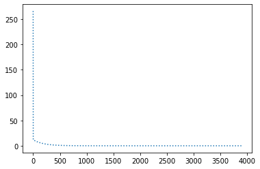
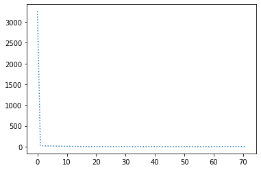

Code
%load_ext autoreload
%autoreload 2
%matplotlib inline
import numpy as np
import matplotlib.pyplot as pltAugustas Macijauskas
May 1, 2021
Toggle cells below if you want to see what imports are being made.
Let’s create 100 x values uniformly distributed between 0 and 100. Note the usage of a random seed for reproducibility:
Calculate y values for the given x values. I chose a slope of -2 and an intercept of 10 and decided not to add noise to make the task easier:
Let’s plot the points to check that everything looks as it should be:
Let’s create some classes and functions that will help us to quickly experiment with different optimization algorithms.
We start by creating our simple LinearModel whose parameters we’ll try to optimize. Here we choose to initialize both the slope and the intercept with the value 1, but this should not matter too much for this problem.
The forward method performs the forward pass of the model to get a prediction for a given x, i.e. just return ax+b.
The backward method is used to calculate gradients of the parameters given x, y and y_pred. These are usually calculated using automatic differentiation in deep learning libraries, such as PyTorch, but here we do everything by hand:
The Tracker utility class will be used to track different values while experimenting. It can be considered an overkill for such a simple task (and I later ended up tracking only one value with it), but it can be very convenient for larger projects, so I included it here too.
The class stores a dictionary of string-list pairs in its state and provides add_record and get_values methods to easily access and update that dictionary.
train_one_epoch is a utility function that trains the model for one epoch (one pass through the data). It performs a forward pass, calculates and tracks the error, gets the gradients of parameters by performing a backward pass and passes those along with the params parameter to the optimizer that updates the weights of the model. The params parameter is a dictionary that is used to hyperparameter constants, such as the learning rate, to the optimizer.
def train_one_epoch(model, data, optimizer, tracker, params):
total_error = 0.0
for x, y in data:
# Forward pass
y_pred = model.forward(x)
# Calculate error
error = 0.5 * (y_pred - y) ** 2
total_error += error
# Backward pass
grad_slope, grad_intercept = model.backward(x, y, y_pred)
# Step the optimizer
params["step"] += 1
optimizer.step(model, grad_slope, grad_intercept, params)
tracker.add_record("error", total_error / len(data))Finally, a utility function that brings everything together to execute an experiment. Our goal is to train the model for as little as possible, stopping when error drops below some desired threshold.
def perform_experiment(optimizer, params, desired_error=1e-8):
# Initialization
model = LinearModel()
data = list(zip(x, y))
tracker = Tracker()
params["step"] = 0
while True:
# Train for an epoch
train_one_epoch(model, data, optimizer, tracker, params)
# Check if we reached desired accuracy
if tracker.get_values("error")[-1] <= desired_error:
break
# Improper hyperparameter values might cause the models to diverge,
# so we include this here to stop execution if this happens
if np.isnan(tracker.get_values("error")[-1]):
break
# Print results and plot error over time
steps = params["step"]
print(f"Epochs: {steps // len(data)}")
print(f"Batches (of size 1): {steps}")
print(f"Slope: {model.slope}")
print(f"Intercept: {model.intercept}")
plt.plot(tracker.get_values("error"), linestyle="dotted")
return params["step"] // len(data), params["step"], model.slope, model.interceptEpochs: 3893
Batches (of size 1): 389300
Slope: -1.9999963788900519
Intercept: 9.999738575620166
Breaks with lr=1e-3
class SGDWithMomentumOptimizer(SGDOptimizer):
def __init__(self):
self.slope_momentum = self.intercept_momentum = 0
def step(self, model, grad_slope, grad_intercept, params):
lr = params["lr"]
miu = params["miu"]
self.slope_momentum = miu * self.slope_momentum + (1 - miu) * grad_slope
model.slope -= lr * self.slope_momentum
self.intercept_momentum = miu * self.intercept_momentum + (1 - miu) * grad_intercept
model.intercept -= lr * self.intercept_momentumclass RMSpropOptimizer(SGDOptimizer):
def __init__(self, eps=1e-8):
self.eps = eps
self.slope_squared_grads = self.intercept_squared_grads = 0
def step(self, model, grad_slope, grad_intercept, params):
lr = params["lr"]
decay_rate = params["decay_rate"]
self.slope_squared_grads = decay_rate * self.slope_squared_grads + (1 - decay_rate) * grad_slope ** 2
model.slope -= lr * grad_slope / (np.sqrt(self.slope_squared_grads) + self.eps)
self.intercept_squared_grads = decay_rate * self.intercept_squared_grads + (1 - decay_rate) * grad_intercept ** 2
model.intercept -= lr * grad_intercept / (np.sqrt(self.intercept_squared_grads) + self.eps)optimizer = RMSpropOptimizer()
params = { "lr": 1e-4, "decay_rate": 0.99 }
perform_experiment(optimizer, params);Epochs: 2765
Batches (of size 1): 276500
Slope: -1.9999999858447193
Intercept: 9.999996406289089optimizer = RMSpropOptimizer()
params = { "lr": 1e-3, "decay_rate": 0.99 }
perform_experiment(optimizer, params);Epochs: 302
Batches (of size 1): 30200
Slope: -1.9999998782649515
Intercept: 9.999976783670757optimizer = RMSpropOptimizer()
params = { "lr": 3e-3, "decay_rate": 0.99 }
perform_experiment(optimizer, params);Epochs: 113
Batches (of size 1): 11300
Slope: -2.0000001115561656
Intercept: 10.000020816756175Works best with lr=3e-3 and decay_rate=0.99.
class Adam(SGDOptimizer):
def __init__(self, eps=1e-8):
self.eps = eps
self.slope_momentum = self.intercept_momentum = 0
self.slope_squared_grads = self.intercept_squared_grads = 0
def step(self, model, grad_slope, grad_intercept, params):
lr = params["lr"]
beta1, beta2 = params["betas"]
step = params["step"]
self.slope_momentum = beta1 * self.slope_momentum + (1 - beta1) * grad_slope
slope_corrected_momentum = self.slope_momentum / (1 - beta1 ** step)
self.slope_squared_grads = beta2 * self.slope_squared_grads + (1 - beta2) * grad_slope ** 2
slope_corrected_squared_grads = self.slope_squared_grads / (1 - beta2 ** step)
model.slope -= lr * slope_corrected_momentum / (np.sqrt(slope_corrected_squared_grads) + self.eps)
self.intercept_momentum = beta1 * self.intercept_momentum + (1 - beta1) * grad_intercept
intercept_corrected_momentum = self.intercept_momentum / (1 - beta1 ** step)
self.intercept_squared_grads = beta2 * self.intercept_squared_grads + (1 - beta2) * grad_intercept ** 2
intercept_corrected_squared_grads = self.intercept_squared_grads / (1 - beta2 ** step)
model.intercept -= lr * intercept_corrected_momentum / (np.sqrt(intercept_corrected_squared_grads) + self.eps)optimizer = Adam()
params = { "lr": 1e-4, "betas": (0.9, 0.999) }
perform_experiment(optimizer, params);Epochs: 2848
Batches (of size 1): 284800
Slope: -1.9999980335219065
Intercept: 9.999814585095613optimizer = Adam()
params = { "lr": 1e0, "betas": (0.9, 0.999) }
perform_experiment(optimizer, params);Epochs: 10
Batches (of size 1): 1000
Slope: -2.00000001786048
Intercept: 10.000001361061178Adam seems to be of the order of 10 times faster than other optimization methods and works with much greater learning rates
optimizer = Adam()
params = { "lr": 1e8, "betas": (0.9, 0.999) }
perform_experiment(optimizer, params);Epochs: 43
Batches (of size 1): 4300
Slope: -2.000001151784137
Intercept: 9.999987336010909In this very easy case of parameters of a linear curve estimation it works with learning rates as large as 1e8, whereas the largest learning rate that still works among other methods is 1e1 for RMSprop. However, the graphs there showed that oscillations in the error were all over the place, while Adam barely oscillated at all.
optimizer = Adam()
params = { "lr": 6e-2, "betas": (0.9, 0.999) }
perform_experiment(optimizer, params, 1e-32);Epochs: 72
Batches (of size 1): 7200
Slope: -2.0
Intercept: 10.0
Also, Adam is the only optimizer that was able to achieve an error as little as 1e-32. Even though out of the box the number of steps (in epochs) was of the same order as for other optimization methods, some hyperparameter tinkering allowed to top them by reducing the number of steps to 72.